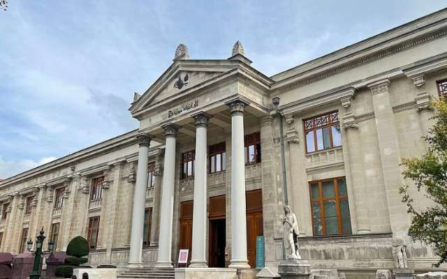

Two days through the layers of the Byzantine and Ottoman capital: museums around Sultanahmet, then Galata and Rumeli Fortress on the Bosphorus.
Day 1

The Hagia Sophia History and Experience Museum tells the roughly fifteen-century story of Hagia Sophia through digital storytelling and reconstructions.

The Great Palace Mosaic Museum, just beneath the Arasta Bazaar in Sultanahmet, displays the most impressive remains of the Great Palace where Byzantine emperors lived…

Istanbul Archaeology Museums, in Gülhane in the outer gardens of Topkapı Palace, were founded as the Ottoman Empire's first modern museum.

The Museum of Turkish and Islamic Arts occupies the İbrahim Pasha Palace on Sultanahmet Square, on the edge of the ancient Hippodrome.

The Museum for the History of Science and Technology in Islam is housed in one of Topkapı Palace's former stable buildings in Gülhane Park.
Day 2

Galata Tower is one of the most familiar symbols of Istanbul's skyline, built in the 14th century by the Genoese of Galata as the highest point of their colony's walls.

Galata Mevlevi Lodge, founded in the late 15th century, is known as the first Mevlevi lodge in Istanbul.

Rumeli Hisarı is a magnificent fortress built at one of the narrowest points of the Bosphorus by Sultan Mehmed the Conqueror in 1452, in just a few months, a year…

Maiden's Tower rises on a small rock off Üsküdar, where the Bosphorus opens into the Marmara, and is one of Istanbul's most romantic symbols.
Ready-made routes organised day by day to help you plan. Durations are approximate; check opening hours and road conditions before you travel.